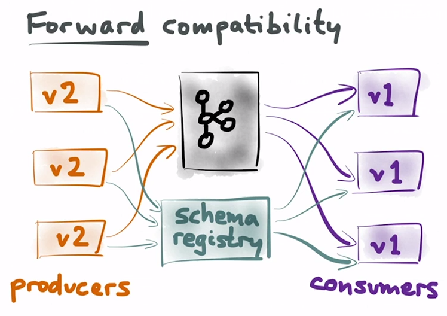

<!doctype html>
<html lang="en">

<head>
    <meta charset="utf-8">

    <title>Kafka + Avro</title>

    <meta name="description" content="Exploring Avro as a Kafka data format">
    <meta name="author" content="Inaki Anduaga">

    <meta name="apple-mobile-web-app-capable" content="yes">
    <meta name="apple-mobile-web-app-status-bar-style" content="black-translucent">

    <meta name="viewport" content="width=device-width, initial-scale=1.0, maximum-scale=1.0, user-scalable=no">

    <link rel="stylesheet" href="https://cdnjs.cloudflare.com/ajax/libs/reveal.js/3.4.0/css/reveal.css">
    <link rel="stylesheet" href="https://cdnjs.cloudflare.com/ajax/libs/reveal.js/3.4.0/css/theme/white.css" id="theme">

    <!-- Theme used for syntax highlighting of code -->
    <!-- https://cdnjs.com/libraries/highlight.js/ -->
    <link rel="stylesheet" href="https://cdnjs.cloudflare.com/ajax/libs/highlight.js/9.9.0/styles/github.min.css">

    <!-- Printing and PDF exports -->
    <script>
        var link = document.createElement( 'link' );
        link.rel = 'stylesheet';
        link.type = 'text/css';
        link.href = window.location.search.match( /print-pdf/gi ) ? 'https://cdnjs.cloudflare.com/ajax/libs/reveal.js/3.4.0/css/print/pdf.css' : 'https://cdnjs.cloudflare.com/ajax/libs/reveal.js/3.4.0/css/print/paper.css';
        document.getElementsByTagName( 'head' )[0].appendChild( link );
    </script>

    <!--[if lt IE 9]>
    <script src="https://cdnjs.cloudflare.com/ajax/libs/reveal.js/3.4.0/lib/js/html5shiv.js"></script>
    <![endif]-->

    <!-- GFM regular inline code tag -->
    <style>
        code:not(.hljs) {
            padding: 0;
            padding-top: 0.2em;
            padding-bottom: 0.2em;
            margin: 0;
            font-size: 85%;
            background-color: rgba(0,0,0,0.04);
            border-radius: 3px;
            /*color: #1b91ff*/
        }

        .small, a.small {
            display: inline-block;
            font-size: 0.6em !important;
            line-height: 1.2em;
            vertical-align: top;
        }

        .smaller-text {
            font-size: 0.8em !important;
        }

        .left-align {
            text-align: left;
        }

        li > p {
            margin-bottom: 0 !important;
        }
        li {
            margin-top: 0.3em !important;
            margin-bottom: 0.3em !important;
        }
        li ul {
            padding-top: 0.3em !important;
            padding-top: 1em;
        }

         li ul li {
            font-size: 0.8em !important;
            margin-top: 0em !important;
            margin-bottom: 0em !important;
        }


    </style>

</head>

<body>

<div class="reveal">

    <!-- Any section element inside of this container is displayed as a slide -->
    <div class="slides">

        <!-- Slides are separated by newline + three dashes + newline, vertical slides identical but two dashes -->
        <section
                data-markdown
                data-separator="^\n---\n$"
                data-separator-vertical="^\n--\n$"
                data-element-attributes="{_\s*?([^}]+?)}"
        >
            <script type="text/template">

# Kafka & Avro

### Exploring Avro as a Kafka data format...

[Github](https://github.com/inakianduaga/kafka-image-processor) <!-- {_class="small"} -->

---

## What is Avro

- [Avro](https://avro.apache.org/docs/1.8.1/index.html) is a data serialization system
<li class="fragment">**Schema stored separate from Record** (i.e. need schema to read record)
    <span class="fragment">(unlike *ProtoBuffers* or *JSON*)</span>
</li>

- Records stored using binary encoding or JSON <!-- {_class="fragment"} -->

- Avro advantages: <!-- {_class="fragment"} -->
    - Smaller filesize (vs JSON) <!-- {_class="fragment"} -->
    - Schema evolution <!-- {_class="fragment"} -->
    - Avro clients provide automatic validation against schema <!-- {_class="fragment"} -->

---

## Avro Schema

Can be written in [IDL](https://avro.apache.org/docs/1.8.1/idl.html) or JSON:

```json
    {
      "namespace": "inakianduaga.kafkaImageProcessor", 
      "type": "record",
      "name": "ImageProcessed",
      "doc": "Image processing response",
      "fields": [
        {
          "name": "content",
          "type": "bytes",
          "doc": "The processed image binary"
        },
        {
          "name": "format",
          "type": {
            "type": "enum",
            "name": "formats",
            "symbols": [
              "JPEG",
              "PNG",
              "GIF"
            ]
          },
          "doc": "The format of the image binary",
          "default": "JPEG"
        }
      ]
    }
```

---

## Avro Schema evolution

If schemas are updated following evolution rules, we can ensure producer/consumer compatibility <!-- {_class="left-align"} -->




<div style="clear: both; margin-bottom: 0.5em;"></div>

<div class="smaller-text fragment left-align">Forward compatibility: <b>Avro ensures consumers can read all records in topic</b>.</div>

---

## Schema Registry

In Kafka context, we need an easy way to fetch Avro schemas. Schema registry provides: <!-- {_class="left-align"} -->

<ul>
    <li class="fragment">
        Automatic storing / fetching of schemas based on [encoded id inside Kafka record](https://github.com/confluentinc/schema-registry/blob/master/docs/serializer-formatter.rst#wire-format)
    </li>
    <li class="fragment">
        Documentation
    </li>
    <li class="fragment">
        Automatic Schema compatibility checks:
        <ul>
            <li>
                Backwards compatible
            </li>
            <li>
                Forwards compatible
            </li>
            <li>
                Fully compatible
            </li>
        </ul>
    </li>
</ul>

<!--
    Notes:
    - Backwards compatible - Ensure that every new field has s default value
    - Forwards compatible - Never remove a field that doesn't have a default value. This is the one most important to specific records.
-->

---

## Integrating Avro in Kafka

We need: <!-- {_class="left-align"} -->

1. Run Schema registry <!-- {_class="fragment"} -->
2. Use Kafka Avro Serializers / Deserializers <!-- {_class="fragment"} -->
3. Have Reader/Writer Avro schemas <!-- {_class="fragment"} -->
4. (Optional) Avrohugger to generate case classes from schemas <!-- {_class="fragment"} -->

---

## Avro POC Demo:

<div><!-- {_class="left-align"} -->
Random image processor
    <ul>
        <li class="fragment">
            <b>Core</b>: Zookeeper/Kafka/Schema Registry
        </li>
        <li class="fragment">
            <b>Distributed services</b>: UI / UI-Backend / Image Processor
        </li>
        <li class="fragment">
            <b>Kafka topics</b>: Images.Urls, Images.Processed
        </li>
        <li class="fragment">
            <b>Helpers</b>: Topics & Schema UI
        </li>
        <li class="fragment">
            Client > UI-Backend > Images.Urls > Processor > Images.Processed > UI-Backend > Client
        </li>
    </ul>
</div>

---

## Run POC

<ol>
    <li class="fragment">
        Go over infrastructure: [Dockerfile](https://github.com/inakianduaga/kafka-image-processor/blob/master/docker/docker-compose.yml)
    </li>
    <li class="fragment">
        Start up services: ```docker-compose up```
        <ul>
            <li>
                [Client](http://localhost:3000/), [Kafka Topics](http://localhost:8084), [Schema Registry](http://localhost:8083)
            </li>
        </ul>
    </li>
    <li class="fragment">
        Run default-filter [request](http://localhost:3000/)
        <ul>
            <li>
                Topics: 2, Schemas: 2
            </li>
            <li>
                <b>Schema evolution</b>: request written in V1 schema, processor service reading with V2 schema
            </li>
        </ul>
    </li>
    <li class="fragment">
        Run custom-filter request
        <ul>
            <li>
                <b>Upgraded schema</b>: request written in V2 schema, processor reading w/ V2 schema
            </li>
        </ul>
    </li>
</ol>

---

### Technical challenges encountered:

- Deserialization:
  - using different reader schema: [Need custom class](https://github.com/inakianduaga/kafka-image-processor/blob/master/processor/src/main/scala/com/inakianduaga/deserializers/ImageRequestDeserializer.scala)
  - into Avro-generated case classes: [Documentation sucks](http://docs.confluent.io/3.1.1/schema-registry/docs/serializer-formatter.html#serializer)
- Schema registry:
  - Renaming fields [not a valid evolution](https://groups.google.com/forum/#!topic/confluent-platform/0NlrxFD5FHk).

---

## Is it worth it?

- Pros: <!-- {_class="fragment"} -->
    - **Consumer safety**: knowing topic data structure is safe forever (schema registry forward compatibility)
    - **Documentation**: Schema registry provides unified place to see structure of all Kafka topics
    - **Schema evolution**: reduces number of breaking changes (i.e. requiring new topics)
    - Storage savings
- Cons: <!-- {_class="fragment"} -->
    - Documentation lacking overall, hard to find example / answers
    - Avro mostly used in the Hadoop context / Big data

---

## References:

- Docs:
  - [Avro spec](http://avro.apache.org/docs/1.8.1/spec.html#binary_encoding)
  - [Avro schema evolution rules](https://docs.oracle.com/cd/E26161_02/html/GettingStartedGuide/schemaevolution.html)
  - [Avro format overview](http://www.youtube.com/watch?v=GfJZ7duV_MM&t=20m0s)
  - [Avro getting started](https://avro.apache.org/docs/1.8.1/gettingstartedjava.html)
  - [Schema registry & Kafka integration docs](http://docs.confluent.io/3.1.1/schema-registry/docs/serializer-formatter.html)

- Tooling:
  - [Confluent Platform docker images](https://github.com/confluentinc/cp-docker-images)
  - [Kafka UI helpers](http://www.landoop.com/)

            </script>
        </section>
    </div>
</div>

<script src="https://cdnjs.cloudflare.com/ajax/libs/reveal.js/3.4.0/lib/js/head.min.js"></script>
<script src="https://cdnjs.cloudflare.com/ajax/libs/reveal.js/3.4.0/js/reveal.js"></script>
<script src="https://cdn.socket.io/socket.io-1.4.5.js"></script>

<script>

    // More info https://github.com/hakimel/reveal.js#configuration
    Reveal.initialize({
        controls: true,
        progress: true,
        history: true,
        center: true,

        transition: 'slide', // none/fade/slide/convex/concave/zoom

        // Options which are passed into marked
        // See https://github.com/chjj/marked#options-1
        markdown: {
            smartypants: true,
            gfm: true,
            tables: true,
            breaks: false,
            pedantic: false,
            sanitize: false,
            smartLists: true,
        },

        multiplex: {
            // Example values. To generate your own, see the socket.io server instructions.
            // http://MYNAME.github.io/MYPRESENTATION/?s=000SECRET000
            secret: Reveal.getQueryHash().s || null, // Obtained from the socket.io server. Gives this (the master) control of the presentation (0438bcf4780b7319)
            id: 'dbd160c06665c053', // Obtained from socket.io server
            url: 'https://mp-seanho00.rhcloud.com:8443/' // Location of socket.io server
        },

        // More info https://github.com/hakimel/reveal.js#dependencies
        dependencies: [
            { src: 'https://cdnjs.cloudflare.com/ajax/libs/reveal.js/3.4.0/lib/js/classList.js', condition: function() { return !document.body.classList; } },
            { src: 'https://cdnjs.cloudflare.com/ajax/libs/reveal.js/3.4.0/plugin/markdown/marked.js', condition: function() { return !!document.querySelector( '[data-markdown]' ); } },
            { src: 'https://cdnjs.cloudflare.com/ajax/libs/reveal.js/3.4.0/plugin/markdown/markdown.js', condition: function() { return !!document.querySelector( '[data-markdown]' ); } },
            { src: 'https://cdnjs.cloudflare.com/ajax/libs/reveal.js/3.4.0/plugin/highlight/highlight.js', async: true, callback: function() {
                hljs.initHighlightingOnLoad();
            } },
            { src: 'https://cdnjs.cloudflare.com/ajax/libs/reveal.js/3.4.0/plugin/zoom-js/zoom.js', async: true },
            { src: 'https://cdnjs.cloudflare.com/ajax/libs/socket.io/1.7.2/socket.io.min.js', async: true },
            { src: 'https://cdnjs.cloudflare.com/ajax/libs/reveal.js/3.4.0/plugin/multiplex/client.js', async: true },
            { src: 'https://cdnjs.cloudflare.com/ajax/libs/reveal.js/3.4.0/plugin/multiplex/master.js', async: true }
        ]
    });

</script>

</body>
</html>

